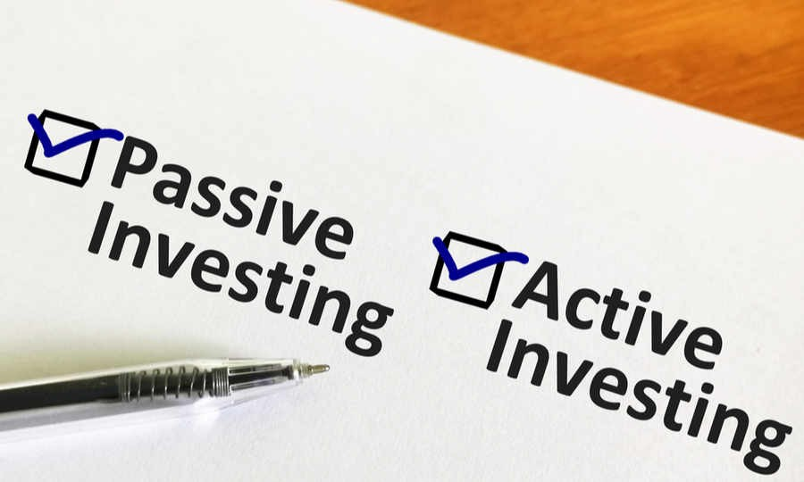

Passive vs. Active ลงทุนแบบไหนดีกว่ากัน
ก่อนที่จะลงทุนในกองทุนรวม เราต้องรู้ก่อนว่ากองทุนที่เรากำลังจะลงทุนนั้น เป็นกองทุนประเภทไหน และผู้จัดการกองทุนมีแนวทางในการบริหารกองทุนอย่างไร ซึ่งกลยุทธ์ที่ผู้จัดการกองทุนใช้ในการบริหารกองทุน จะแบ่งได้เป็นการบริหารแบบเชิงรับ หรือ Passive Fund และการบริหารแบบเชิงรุก หรือ Active Fund แล้ว Passive Fund และ Active Fund คืออะไร นักลงทุนควรพิจารณาเลือกลงทุนแบบไหนดีกว่ากัน บทความนี้มีคำตอบ
Passive Fund หรือ Index Fund
กองทุนรวมแบบ Passive Fund หรือมีชื่อเรียกอีกชื่อหนึ่งว่า กองทุนรวมดัชนี หรือ Index Fund คือ กองทุนรวมหุ้นที่มีวัตถุประสงค์ในการลงทุนเพื่อสร้างผลตอบแทนให้ “ใกล้เคียงกับดัชนีให้มากที่สุด เท่าที่จะเป็นไปได้” เช่น วันนี้ SET Index +5% กองทุนรวมดัชนีก็ต้อง +5% หรือ +4.9% หรือ +5.1% โดยประมาณ (ขอให้ได้ใกล้เคียงที่สุด) เป็นต้น
กองทุนรวมดัชนี ส่วนใหญ่จะแบ่งตามดัชนี หรือ Benchmark ที่กองทุนนั้นๆ ลงทุนเพื่อสร้างผลตอบแทนให้ใกล้เคียง เช่น SET, SET100, SET50 และ SETHD เป็นต้น นักลงทุนสามารถสังเกตได้จากชื่อกองทุน โดยชื่อกองทุนจะบอกได้ว่ากองทุนนั้นใช้ดัชนีอ้างอิงเป็นดัชนีใด เช่น กองทุน Passive Fund ที่ใช้ดัชนี SET50 เป็นดัชนีอ้างอิง จะมีคำว่า SET50 อยู่ในชื่อกองทุนนั้นด้วย นอกจากนี้แนวทางการลงทุนจะถูกแจ้งอยู่ในหนังสือชี้ชวนด้วยเช่นกัน
ถึงตรงนี้หลายคนคงจะสงสัยว่า แล้วกองทุนรวมดัชนีที่ไม่พยามเอาชนะตลาด มันมีดีที่ตรงไหน?
คำตอบก็คือ ถ้าเราเชื่อว่า “ตลาดหุ้นมีประสิทธิภาพ” และ “ราคาหุ้นทุกตัวในตลาด เป็นราคาที่สมเหตุสมผล” การลงทุนในกองทุนรวมดัชนีก็จะตอบโจทย์ เพราะถ้าเราเชื่อว่าราคาหุ้นที่เห็นนั้นเป็นราคาที่สมเหตุสมผลแล้วล่ะก็ ก็เปล่าประโยชน์ที่จะพยายามเอาชนะตลาด
ดังนั้น การลงทุนในกองทุนรวมดัชนี จึงเป็นการลงทุนโดยซื้อหุ้นทั้งตลาดตามดัชนี โดยกองทุนรวมดัชนี จะไม่พยายามทำตัวเหมือนว่า เลือกหุ้นที่ “ดีที่สุด” หรือ หลีกเลี่ยงหุ้นที่ “แย่ที่สุด” แต่จะลงทุนไปตามตลาด ทีนี้เราลองมาดู ข้อดี ข้อเสีย ของกองทุนรวมดัชนีกันบ้าง
ข้อดี
- กองทุนรวมดัชนี เป็นกองทุนที่มีความเสี่ยงต่ำสุดในบรรดากองทุนรวมหุ้น หรือ ถ้าจะมีความเสี่ยง ก็จะเสี่ยงในระดับเดียวกับดัชนี (เพราะกองทุนรวมจะลงทุนตามดัชนีที่ใช้อ้างอิงและลงทุนในสัดส่วนเดียวกันด้วย)
- กองทุนรวมดัชนี มีค่าใช้จ่ายหรือค่าธรรมเนียมที่ต่ำกว่ากองทุนรวมแบบ Active
- ด้วยความที่กองทุนรวมดัชนี ไม่จำเป็นต้องใช้ ผู้จัดการกองทุน ในการคัดเลือกหุ้น ดังนั้นความเสี่ยงในเรื่องของการคัดเลือกหุ้นให้ถูกตัว หรือเลือกหุ้นผิดตัวจึงต่ำกว่า
- กองทุนรวมดัชนี เมื่อมีการลงทุนเลียนแบบดัชนี จึงทำให้กองทุนรวมดัชนี สามารถถือหุ้นได้ยาวกว่า ดังนั้นถ้าใครอยากถือหุ้นยาวๆ หรือ ลงทุนระยะยาว กองทุนรวมดัชนีน่าจะเป็นอีกทางเลือกที่ดี เพราะกองทุนรวมดัชนี จะมีการปรับเปลี่ยนพอร์ตน้อยมาก คือ ปรับเปลี่ยนพอร์ตตามดัชนี ทุกๆ 6 เดือน หรือ 1 ปี เป็นต้น
ข้อเสีย
- กองทุนรวมดัชนี จำเป็นจะต้องลงทุนในหุ้นตลอดเวลา ถ้าสังเกตให้ดีจะพบว่า ในภาวะตลาดหุ้นเป็นขาขึ้น กองทุนรวมดัชนีจะให้ผลตอบแทนที่ดีมาก แต่ในทางกลับกัน ถ้าเป็นตลาดขาลง กองทุนรวมดัชนีก็จำเป็นจะต้องถือหุ้นตลอดเวลาด้วยเช่นกัน จึงทำให้ผลตอบแทนลดลงตามดัชนี
- นอกจากนี้เมื่อเป็นตลาดขาลง กองทุนรวมดัชนี ไม่สามารถลดทอน หรือขายหุ้นออกจากพอร์ตได้หมด แล้วถือเป็นเงินสด ซึ่งกองทุนรวมแบบ Active จะได้เปรียบตรงจุดนี้ เนื่องจากผู้จัดการกองทุนสามารถปรับพอร์ตได้ตามภาวะของตลาด
- กองทุนรวมดัชนี มีเป้าหมายเพื่อ “สร้างผลตอบแทนใกล้เคียงกับดัชนี” เท่านั้นฉะนั้นนักลงทุนจึงไม่สามารถคาดหวังถึงการเอาชนะตลาดได้
แล้วกองทุนรวมดัชนี เหมาะสำหรับใคร? กองทุนรวมดัชนีเหมาะกับ
- นักลงทุนที่สนใจลงทุนในตลาดหุ้นระยะยาว
- นักลงทุนที่ต้องการได้รับอัตราผลตอบแทน และรับความเสี่ยงได้ในระดับเดียวกับดัชนี
- ผู้ที่ไม่มีความรู้หรือไม่มีเวลาในการวิเคราะห์ หรือคัดเลือกหุ้นรายตัว หรือไม่ไว้ใจฝีมือในการคัดเลือกหุ้นของผู้จัดการกองทุน เพราะในความเป็นจริง กองทุนรวมหุ้นส่วนใหญ่แพ้ตลาด
Active Fund
กองทุนรวม Active Fund เป็นการบริหารแบบเชิงรุก โดยใช้ความสามารถของผู้จัดการกองทุนเป็นหลักในการคัดเลือกสินทรัพย์ที่จะเข้าลงทุน โดยเป้าหมายคือต้องการให้ได้รับผลตอบแทนสูงกว่าเกณฑ์มาตรฐานที่กำหนด (benchmark) อาทิ ลงทุนให้ได้อัตราผลตอบแทนมากกว่า SET Index โดยสามารถแบ่งการวิเคราะห์การลงทุนของผู้จัดการกองทุนได้ใน 2 รูปแบบ คือ
1. การวิเคราะห์แบบ Top-Down Analysis ผ่านการวิเคราะห์เศรษฐกิจมหภาค อุตสาหกรรม และจึงมาดูพื้นฐานของสินทรัพย์ที่จะเข้าลงทุนว่าในภาวะนี้จะเหมาะสมที่จะลงทุนหรือไม่
2. การวิเคราะห์แบบ Bottom-Up Analysis จะเริ่มพิจารณาจากสินทรัพย์ที่เข้าลงทุนก่อนว่าเป็นสินทรัพย์ที่มีคุณภาพหรือไม่ แล้วค่อยดูว่าสภาพแวดล้อมในอุตสาหกรรมนั้นดีหรือไม่ และสุดท้ายจึงดูว่าเป็นเวลาเหมาะทางเศรษฐกิจที่จะลงทุนหรือยัง ก็จะตรงข้ามกับวิธี Top-Down
ส่วนข้อดี ข้อเสียของกองทุนรวมแบบ Active ก็จะตรงกันข้ามกับแบบ Passive นั่นเอง
แล้วกองทุนรวมแบบ Active เหมาะกับใคร?
- คำตอบก็จะเหมาะกับนักลงทุนที่คิดว่าจะมีผู้จัดการกองทุนเก่งๆ ที่จะบริหารกองทุนรวมให้ได้ผลตอบแทนที่ดี และชนะตลาดได้ในระยะยาวด้วย แม้ว่ากองทุนรวมแบบ Active จะเก็บค่าธรรมเนียมที่แพงกว่า แต่นักลงทุนก็ยินดีที่จะจ่าย เพราะเชื่อในฝีมือของผู้จัดการกองทุนนั่นเอง ดังนั้นเราจึงต้องเลือกให้ถูกกองด้วย เพราะอย่าลืมว่ากองทุนรวมหุ้นส่วนใหญ่แพ้ตลาด